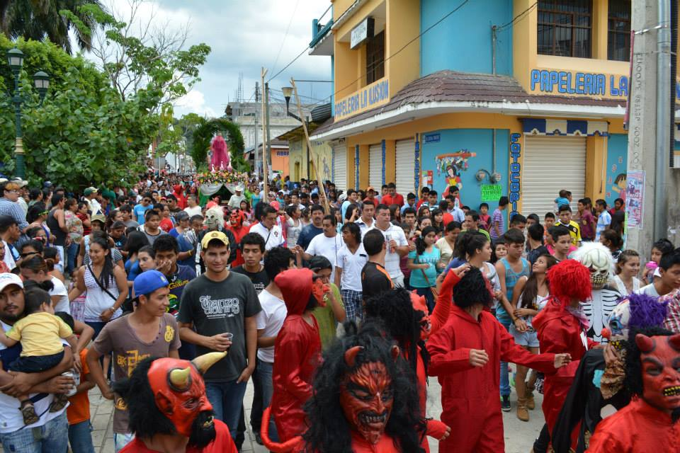
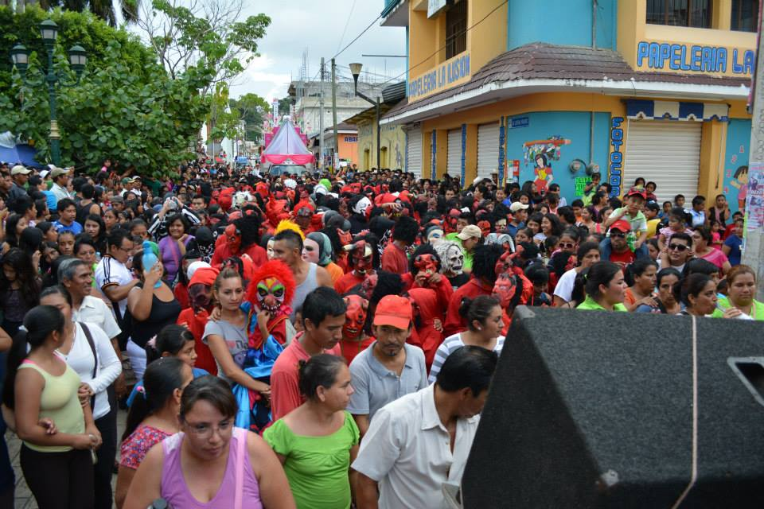
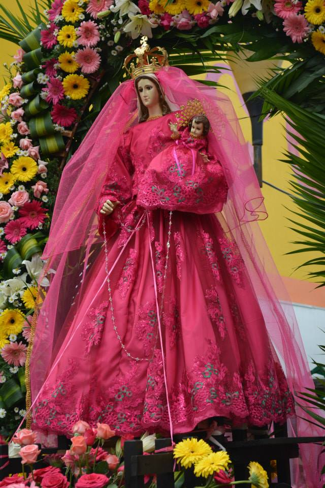
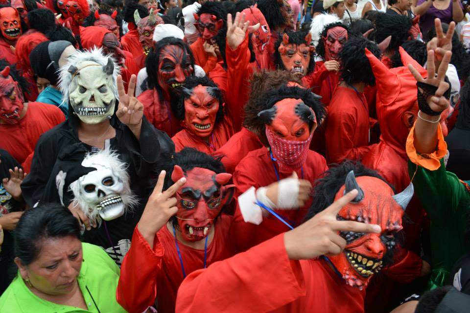
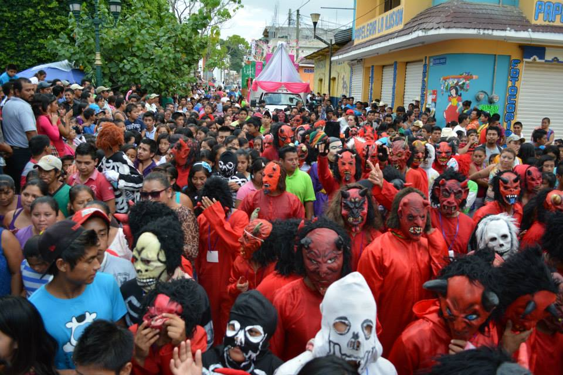

Se lleva a cabo el 05 de octubre, año con año hacen un recorrido por las calles de Yajalón.
En dicho recorrido participan personas disfrazadas principalmente del "Diablito y la muerte"
Es una tradición muy bella, puesto que en el recorrido, las personas disfrazas invitan a los observadores a bailar o tambien los salen a correr
El recorrido comienza en la ganadera, ubicado en la avenida central entre 3a y 4a poniente
Si se encuentra en el parque central, camine hacia el lado poniente
Usted puede pasar un rato agradable, ya sea bailando, o tomando fotografia





Posicione el mouse sobre las imágenes